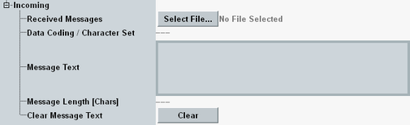

Incoming SMS
This section displays information about incoming mobile-originating short messages.

Incoming SMS parameters
Selects a file from the system drive folder D:\Rohde-Schwarz\CMW\Data\SMS\LTE\Received. Incoming messages are stored there with the file extension .sms.
Only messages received in the current session are available. The files are deleted during startup.
Remote command:Indicates whether the last received message is a 7-bit ASCII message, an 8-bit binary message or a 16-bit Unicode message.
Remote command:Show the text and length of the last received SMS message.
Remote command:The button resets all parameters related to a received message.
The message information is deleted. The "message read" flag is set to true.
Remote command: